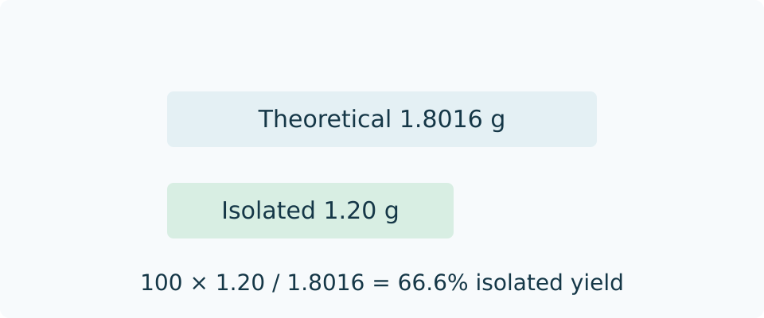
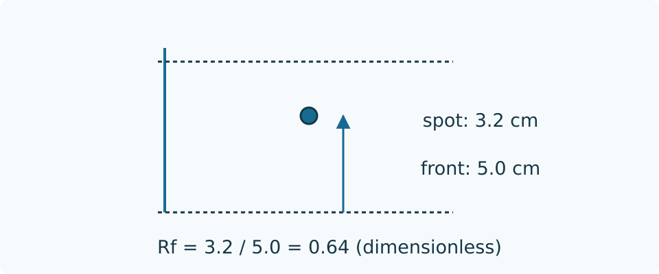
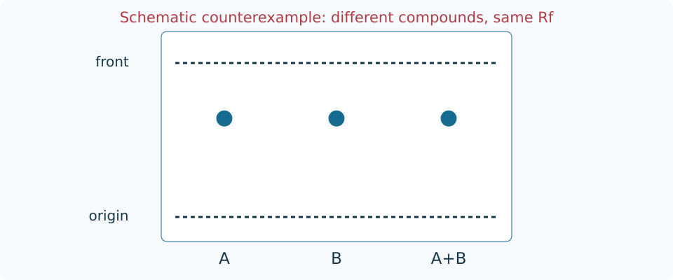
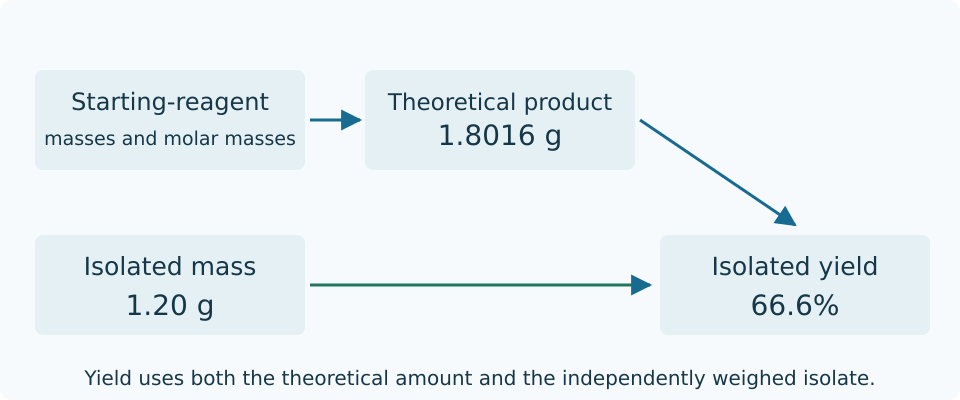

Plan a short route using known functional-group changes.
Calculate limiting reagent, theoretical amount and isolated yield with units.
Evaluate identity and purity separately from the recovered mass.
Plan with functional groups
Oxidation followed by esterification connects ethanol, ethanoic acid and ethyl ethanoate.
Choose a target transformation before selecting conditions.
Balance before calculating
The aspirin teaching example uses one salicylic acid and one acetic anhydride per aspirin.
The other product is ethanoic acid; do not drop atoms from the equation.
Find the limiting reagent
10.0 mmol/1 is less than 15.0 mmol/1, so salicylic acid limits theoretical aspirin.
Compare n divided by its stoichiometric coefficient, not the masses.
Predict the maximum product mass
0.0100 mol times 180.16 g/mol gives 1.8016 g theoretical aspirin.
Keep units visible and round the final reported result appropriately.
Calculate isolated yield

An isolated mass of 1.20 g corresponds to 66.6% of the theoretical mass.
A mass-based yield assumes that the weighed material is the stated product.
Read a TLC comparison
The simulated crude lane has spots matching starting-material and product references under the same conditions.
A reference match supports a comparison, not unique identification.
Measure from the origin

For a 3.2 cm spot and 5.0 cm solvent-front travel, Rf = 0.64.
Both distances start at the same baseline; the ratio has no units.
Ask which functional groups remain
An aspirin-like teaching trace retains acid features and adds ester evidence.
Check the expected product structure rather than assuming every starting-material feature should disappear.
One spot need not mean one compound

Two distinct compounds can have the same Rf in one eluent.
Complement TLC with spectral evidence and other suitable purity checks.
Keep the calculation reproducible

Saved raw mass and an amount table feed an Rmd calculation and report.
Changing an input and knitting again should update every dependent result.
Work one example on paper
Using 1.3812 g salicylic acid (138.12 g/mol) and 1.53135 g acetic anhydride (102.09 g/mol), calculate both amounts, theoretical aspirin mass and yield from 1.20 g isolated material. Explain why these numbers cannot establish purity.
A common mistake to repair
“66.6% yield” and “66.6% pure” answer different questions. Also distinguish isolated yield from starting-material conversion and product selectivity.
Explain the correction using a drawing or a specific observation.
Test your explanation
Which atoms, bonds or observations support the claim?
What alternative would make a different prediction?
What assumption limits the conclusion?
Give a partner your explanation without the answer label. Can they follow it?